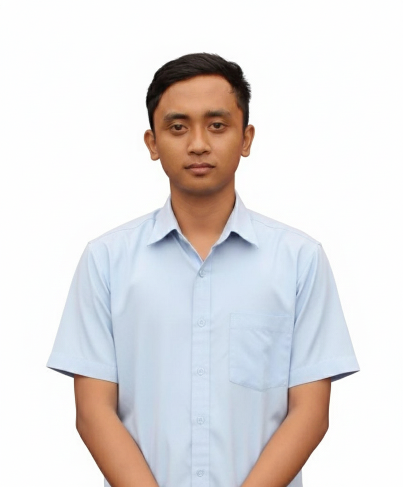

Lulusan Teknik Informatika dari Soegijapranata Catholic University dengan IPK 3.46/4.00 (Predikat Sangat Memuaskan). Memiliki spesialisasi dalam menjembatani teknologi kecerdasan buatan (AI/NLP), interaktivitas Internet of Things (IoT), serta implementasi desain antarmuka pengguna (UI/UX).
Fokus utama saya adalah mengembangkan **Sisi Frontend & Representasi Visual** produk digital. Saya ahli dalam menerjemahkan pemrosesan data model AI atau sensor hardware IoT ke dalam tampilan antarmuka web yang interaktif, responsif, serta mudah dipahami oleh pengguna akhir.
Mengembangkan visualisasi komparasi algoritma model **LSTM dan Bi-LSTM** untuk klasifikasi opini publik berbasis teks di Twitter, berhasil meraih metrik akurasi optimal sebesar **73.05%**.
Membangun sistem integrasi data hardware IoT untuk pelacakan suhu dan kelembaban udara secara langsung, yang terhubung stabil dengan repositori database log.
Merancang purwarupa arsitektur informasi dan layout antarmuka situs web informasi ibadah yang berfokus penuh pada kenyamanan serta pengalaman akses jemaat (*user experience*).